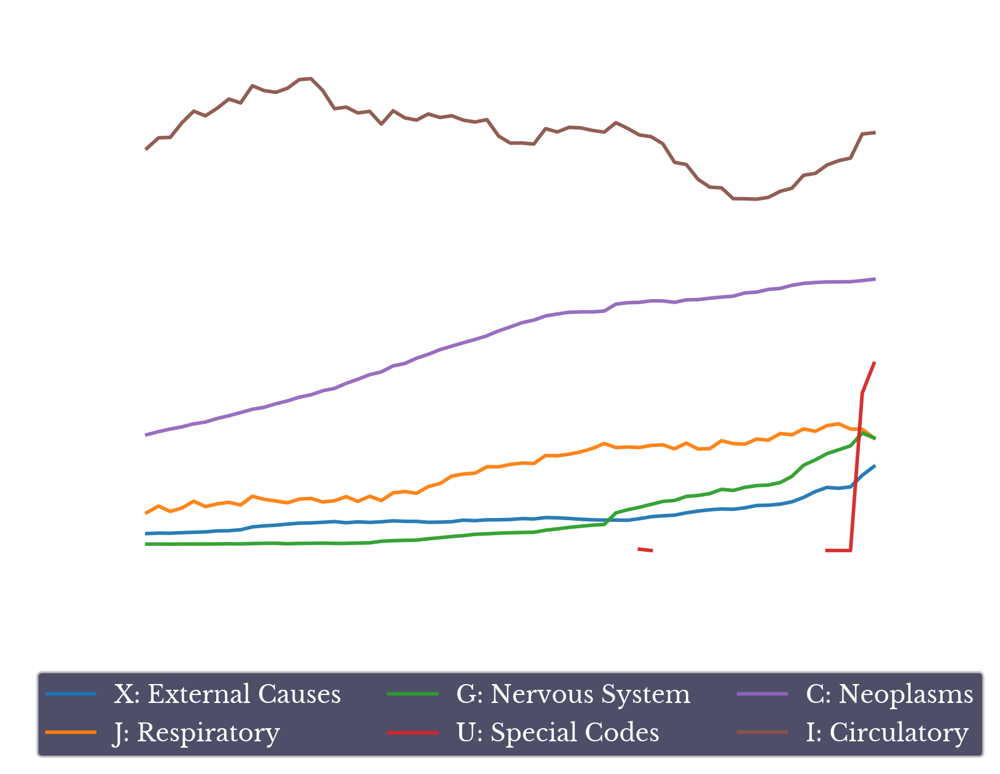
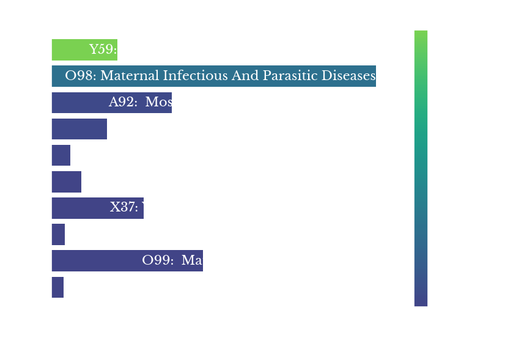
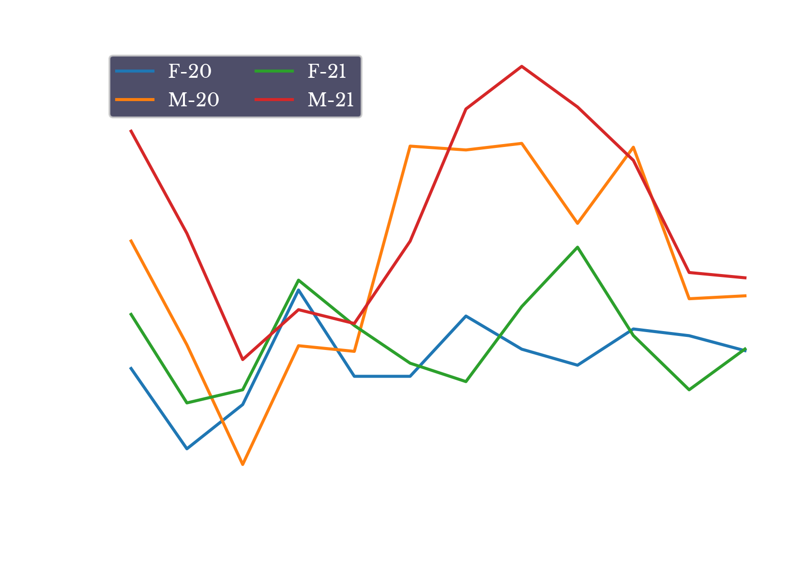
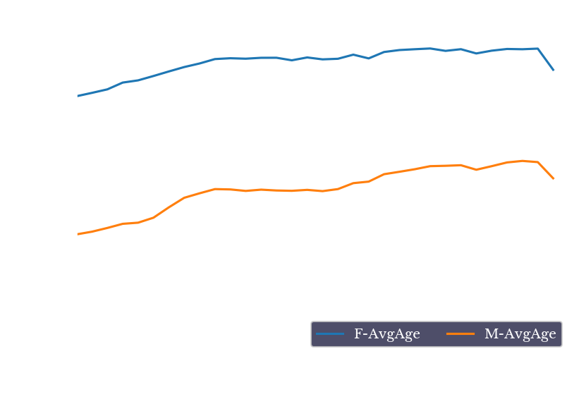

Cause of Death Records in 2021
Fri, 23 Dec 2022
Covid-19, Data Analysis, Data Visualization, Medicine, Software
This post explores Multiple Cause-of-Death records for the year 2021, taken from the U.S. Division of Vital Statistics. Specifically, the impact of the second full year of the coronavirus pandemic is explored in more detail.
The first item to note is that the excess mortality observed in 2020 continues and even increases into 2021. Figure 1 shows the total count of mortality records by year.

Figure 1: Count of Deaths by Year
As can be seen, the sharply elevated number of deaths beginning in 2020 continues to grow even further in 2021.
Figure 2 breaks down this overall record count into the six most prevalent top-level ICD-10 codes of 2021. As seen in the chart, most categories at least preserve their levels from prior to the pandemic.

Figure 2: Count of Top ICD-10 Categories by Year
Specifically, further increases in circulatory, external, special, and (to a lesser extent) neoplasm codes are observed. Mild declines in respiratory and nervous system codes are observed. From Figure 2, it is clear that the vast majority of the increase in deaths observed in Figure 1 is due to records with the special code U071: Covid-19.
Figure 3 shows the top ICD-10 categories for 2018, 2019, 2020, and 2021. The
x-axis records the number of deaths in thousands for the given year, while the color axis shows the average age for records in the group.
Figure 3: Top ICD-10 Diseases by Year
The charts for 2018 and 2019 are very consistent, with only the ranking for stroke and hypertensive heart disease changing. The leading diseases prior to the pandemic are primarily heart disease, COPD & lung cancer, and dementia. In 2020 and 2021, Covid-19 becomes the leading cause of death, and in 2021 its margin grows, exceeding 400k records.
Figure 4 shows the monthly counts of circulatory and Covid-19 deaths for 2020 and 2021. The monthly pattern for circulatory deaths in 2021 appears similar to that of 2020.
Figure 4: Monthly Circulatory and Covid-19 Deaths (2020-21)
The peak in Covid-19 deaths appears to be in the winter of 2020-21, with a maximum of nearly 100k records observed in January 2021.
Figure 5 explores differences between 2020 and 2021, by computing percentage changes in record counts between the two years. The color of each bar reflects the percentage increase. ICD-10 codes with less than an average of 25 records between the years are suppressed, as these tend to have large percentage changes.

Figure 5: Top 2021 Increases by Percent Change
A large percentage change (3450%) is observed in vaccine-related deaths. However, the raw number of deaths is very low, increasing from only 2 in 2020 to 71 in 2021. Given there was a massive increase in vaccine doses administered in 2021, it is not too surprising that this number sees a significant, albeit small, increase.
Figure 6 shows the increase in excess circulatory deaths in the sub-40 population by biological sex. The graphs for both 2020 and 2021 are shown. The numbers for 2021 are computed by subtracting the 2021 number from 2019. This is done because the differences between 2021 and 2020 are relatively small; the majority of the increases occur from 2019 to 2020.

Figure 6: Excess Circulatory Deaths under 40
As can be seen, the pattern from 2020 largely appears to continue. Namely, in the younger population, excess deaths among males are greater than females. As mentioned in the previous post, this corroborates evidence showing men tend to be impacted by heart disease earlier than women on average.

Figure 7: Average Age at Death
Finally, Figure 7 shows the average age stated on each record. As can be seen, a second straight year of decline in this average is observed in 2021. Life expectancy is computed using alternate (and more sophisticated) criteria, but this data corroborates reports of a decrease in U.S. life expectancy due to the coronavirus pandemic.
In conclusion, record counts for most of the common ICD-10 categories continue their surge into 2021. Covid-19 retains its place as the leading cause of death in 2021. Similar patterns are observed in the other leading causes of death between 2020 to 2021. Specifically, increases in circulatory deaths from their 2019 levels appear relatively consistent between the two years. From a high level, it appears that 2021 is somewhat of a continuation of the patterns beginning in the previous year.
{kind=link}
{kind=link}
{kind=link}
{kind=link}
{kind=link}
{kind=link}